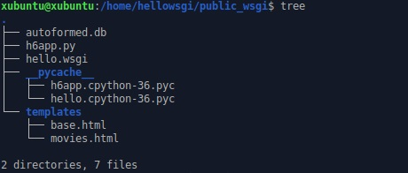
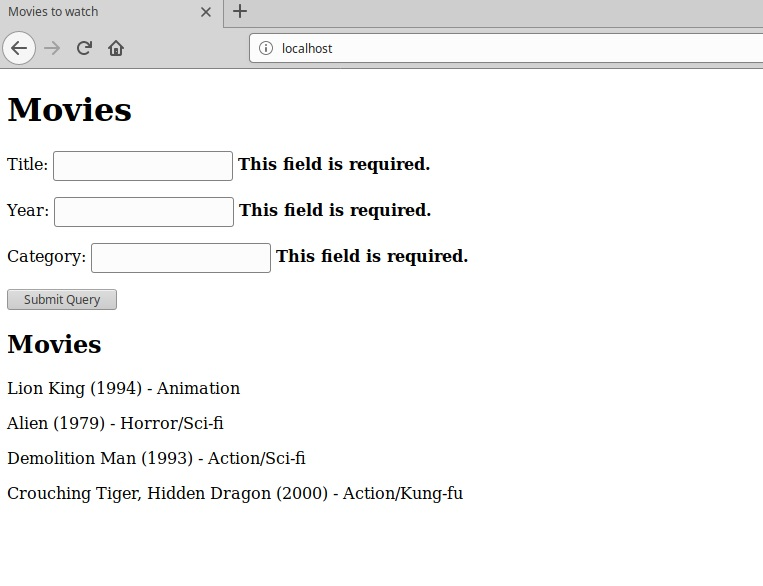

Tietokanta webissä
10.03.2020, Kristian KoponenTehtävänanto
Linux-palvelimet h6
Käytetyt laitteet
Lenovo ThinkPad X220
| Prosessori: | Intel(R) Core(TM) i5-2540M @ 2.60Ghz |
|---|---|
| Keskusmuisti: | 4GiB 1333Mhz DDR3 |
| Näytönohjain: | Intel HD Graphics 3000 |
| Käyttöjärjestelmä: | Windows 10 64-bit |
SanDisk Ultra USB 3.0 32 GB
xubuntu 18.04.3 amd64 -liveTietokanta wepissä (mod_wsgi)
Tarkoitus oli todennäköisesti tehdä tämä tehtävä ensin testiympäristössä, mutta tein epähuomiossa suoraan mod_wsgi:n kanssa toimivaksi
Tiedostojen luonti
Aloitetaan laittamalla hello world -ohjelma pyörimään tuotantoympäristössä edellisen harjoituksen vaiheiden mukaisesti.
WSGI-tiedosto
$ nano /home/hellowsgi/public_wsgi/hello.wsgi
import sys
assert sys.version_info.major >= 3, "Python versio on vanha"
sys.path.insert(0, '/home/hellowsgi/public_wsgi/')
from h6app import app as application
Kirjoitetaan Flask Automatic Forms -ohjelman pohjalta oma python3 ohjelma. Aluksi luodaan python-tiedosto. Esimerkki autoformed.py
$ nano /home/hellowsgi/public_wsgi/h6app.py
#!/usr/bin/python3
"RSVP autoform"
from flask import Flask, render_template, flash, redirect
from flask_sqlalchemy import SQLAlchemy
from wtforms.ext.sqlalchemy.orm import model_form
from flask_wtf import FlaskForm
import wtforms
app = Flask(__name__)
db = SQLAlchemy(app)
app.config["SQLALCHEMY_DATABASE_URI"] = "sqlite:///autoformed.db"
app.config["SQLALCHEMY_TRACK_MODIFICATIONS"] = False
app.config["SECRET_KEY"] = "eiph5xai6piequoo7aiH2oghiem9Ei"
class Movie(db.Model):
id = db.Column(db.Integer, primary_key=True)
title = db.Column(db.String, nullable=False)
year = db.Column(db.Integer, nullable=False)
category = db.Column(db.String, nullable=False)
field_args = { }
MovieForm = model_form(model=Movie, base_class=FlaskForm, db_session=db.session, field_args=field_args)
@app.before_first_request
def beforeFirstRequest():
db.create_all()
@app.route("/", methods=["GET", "POST"])
def index():
form = MovieForm()
if form.validate_on_submit():
movie = Movie()
form.populate_obj(movie)
db.session.add(movie)
db.session.commit()
flash("Movie has been added.")
return redirect("/")
movies = db.session.query(Movie)
return render_template("movies.html", form=form, movies=movies)
#def main():
# app.run(debug=True)
if __name__ == "__main__":
main()
Luodaan pohjamuotti. Esimerkki Base template
$ nano /home/hellowsgi/public_wsgi/templates/base.html
<!DOCTYPE html>
<html lang=en>
<head>
<title>Movies to watch</title>
<meta charset="utf-8">
</head>
<body>
{% with messages = get_flashed_messages() %}
{% if messages %}
<ul class=flashes>
{% for message in messages %}
<li>{{ message }}</li>
{% endfor %}
</ul>
{% endif %}
{% endwith %}
{% block body %}
<h1>Hello...</h1>
{% endblock %}
</body>
</html>
Viimeiseksi luodaan muotti tietokannan läpikäymiselle. Esimerkki Form and List template
$ nano /home/hellowsgi/public_wsgi/templates/movies.html
{% extends "base.html" %}
{% block body %}
<h1>Movies</h1>
<form method=post action="/">
{{ form.csrf_token }}
{% for field in form if not field.name in ["csrf_token"] %}
<p>{{ field.label }}: {{ field }} <b>{{ " ".join(field.errors) }}</b></p>
{% endfor %}
<input type="submit">
</form>
<h2>Movies</h2>
{% for movie in movies %}
<p>{{ movie.title }} ({{movie.year}}) - {{movie.category}}</p>
{% endfor %}
{% endblock %}
Päivitetään ohjelman sisältö koskettamalla hello.wsgi tiedostoa
$ touch /home/hellowsgi/public_wsgi/hello.wsgi
Puuttuvien osien asennusta
Katsotaan localhostista mitä tapahtuu.
$ curl localhost|grep "title"
<title>500 Internal server Error</title>
$ tail -1 /var/log/apache2/error.log
[Tue Mar 10 15:58:57.097190 2020] [wsgi:error] [pid 8424:tid 140635730364160] [remote 127.0.0.1:46218] ModuleNotFoundError: No module named 'flask_sqlalchemy'
Ei ole SQL-alchemy -moduulia asennettuna. Etsitään se ja asennetaan.
$ sudo apt-cache search "flask_sqlalchemy"| grep "sqlalchemy" | grep "python3"
python3-flask-sqlalchemy - adds SQLAlchemy support to your Python 3 Flask application
$ sudo apt-get install python3-flask-sqlalchemy -y
Kokeillaan uudelleen.
$ curl localhost|grep "title"
<title>500 Internal server Error</title>
$ tail -1 /var/log/apache2/error.log
[Tue Mar 10 16:04:48.556641 2020] [wsgi:error] [pid 8424:tid 140635721971456] [remote 127.0.0.1:46232] ModuleNotFoundError: No module named 'wtforms'
Seuraavaksi asennetaan WTForms.
$ sudo apt-cache search "python3"|grep "wtforms"
python3-wtforms - flexible forms validation and rendering library for Python 3
$ sudo apt-get install python3-wtforms -y
Kokeillaan taas
$ curl localhost|grep "title"
<title>500 Internal server Error</title>
$ tail -1 /var/log/apache2/error.log
[Tue Mar 10 16:06:33.772297 2020] [wsgi:error] [pid 8424:tid 140635730364160] [remote 127.0.0.1:46236] ModuleNotFoundError: No module named 'flask_wtf'
ja asennetaan puuttuva integraation osa.
$ sudo apt-cache search "python3"|grep "wtf"|grep "flask"
python3-flaskext.wtf - Simple integration of Flask and WTForms (Python 3)
$ sudo apt-get install python3-flaskext.wtf -y
Lopputulos
{kind=link}
Tarkastellaan lopullista ohjelmaa localhost osoitteesta.
{kind=link}
Tietokantaan voi nyt tallentaa tietoa lomakkeella. Ohjelma toimii. Validointi on yksinkertainen ja tarkastaa ainoastaan onko kenttään syötetty mitään.